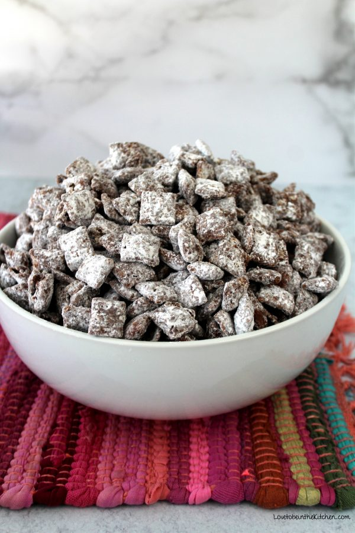

Muddy Buddies
Description
The perfect blend of chocolate and peanut butter, muddy buddies never
fails to satisfy. It can get messy, so watch out! This recipe will prepare
a single serving.
Ingredients
- 3 cups chocolate Chex
- 1/3 cup chocolate chips
- 1/6 cup peanut butter (a big spoonful)
-
1 1/3 tbsp stick butter (if it's a stick of butter, this will be a
little less than a cm wide chonk)
- 1/3 tsp vanilla extract
- 1/2 cup powdered sugar
Steps
- Melt butter in the microwave, in a medium-sized bowl.
-
While waiting for the butter to be ready, add the Chex to another bowl,
and set it aside for later.
-
When the butter is (mostly) melted, stir in chocolate chips, peanut
butter, and vanilla.
- Microwave the bowl for 90 seconds.
-
While waiting, pour the bowl of dry Chex into a gallon-sized ziploc bag.
-
When ready, pour the chocolate mixture into the ziploc bag and zip it
shut. Scrunch the bag until the chocolate mixture covers all the Chex.
-
For best results, wait at least thirty minutes for the chocolate mixture
to cool. If you are impatient, skip this step.
-
Open the bag and pour in the powdered sugar. Zip it closed, leaving air
inside the bag, and shake the bag until they're all covered in powdered
sugar.
-
Pour them back into the bowl you had the Chex in in the beginning, and
enjoy.
More recipes